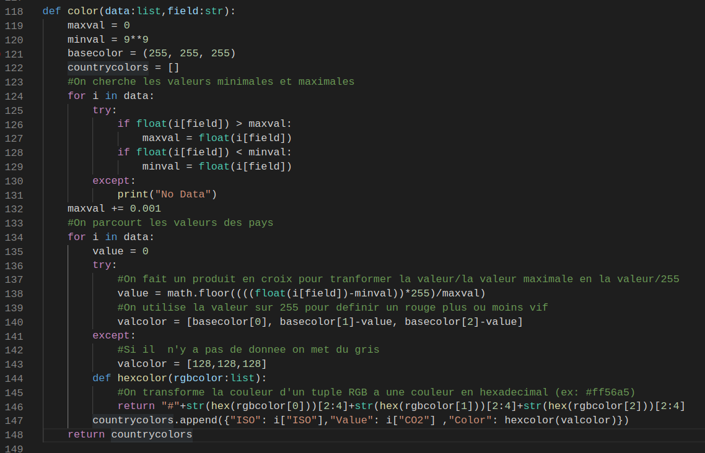
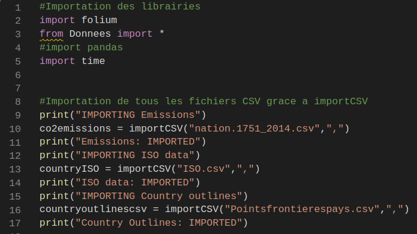
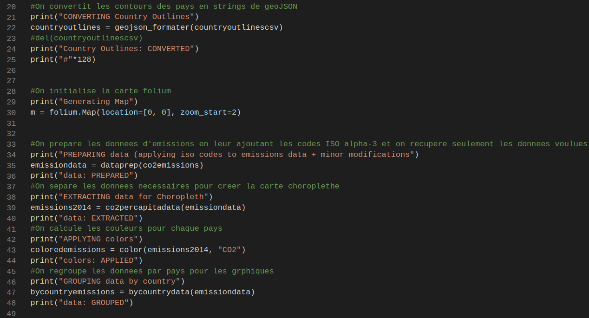
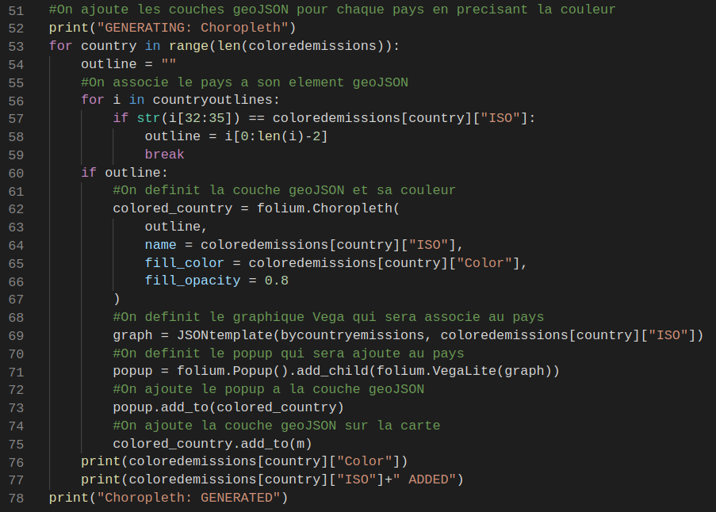
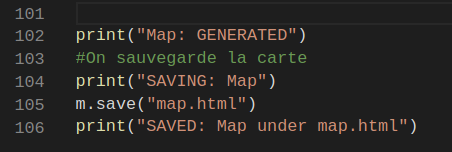

Le but principal de ce projet etait d'utiliser nos connaissances en gestion de donnees (principalement en CSV) afin de traiter de l'open data. L'idee etait de placer les donnees/ce que l'on a obtenu avec les donnees sur une carte avec une bibliotheque de cartographie (folium). Apres avoir cherche des tableaux de donnees parmi plusieurs sites d'open data j'ai decide d'utiliser un tableau de donnees donnant la quantite d'emissions de CO2 par pays et par annee entre 1750 et 2014 (les pays n'ont pas tous des donnees a partir de 1750). Je me suis donc pose trois questions:
Pour ce projet j'ai utilise plusieurs bases de donnees pour les differents tableaux de donnees. Tout d'abord, j'ai utilise la base de donnees du CDIAC (Carbon Dioxide Information Analysis Center) qui regroupe des donnees sur les emissions de CO2 dans le monde ainsi que des donnees relatives a l'environnement... C'est un organisme du Department of Energy des etats-unis.
L'autre base de donnees que j'ai utilisee est la base de donnees (a peu pres) Github. Github est un site internet appartenant a Microsoft base sur l'open source ou les utilisateurs publient leurs projets libres de droits. J'ai recupere deux tableaux pour mon projet parmi les projets presents sur Github:
Une fois que j'avais trouve mes donnees j'ai commence a experimenter avec folium pour decouvrir les differentes fonctionalites (creer une carte, ajouter des elements sur la carte,...). J'ai ensuite decide de creer une carte ou les pays sont colores pour representer la quantite d'emissions de CO2 (plus tard j'ai change pour la quantite de CO2 par habitant) (Choropleth). J'ai donc commence a m'ocuper du traitement de donnees. J'ai d'abord recupere les donnees du fichier contenant les emissions CO2 grace a CSVReader. J'ai rencontre un probleme deja ici car le fichier avec les emissions CO2 contenait seulement le nom des pays mais pas leurs codes ISO alpha-3. J'ai donc cree la fonction dataprep (fichier Donnees.py) qui renvoie une liste de dictionnaires contenant le pays, son ISO alpha-3 (obtenu avec la sous fonction ISO), l'annee, les emissions totales et les emissions par habitant. J'ai ensuite commence a creer la carte choroplethe tout d'abord en utilisant un fichier deja en GeoJSON et avec pandas pour voir ce que j'obtenais. J'ai ensuite commence a ecrire les fonctions pour repliquer ce que fait folium.Choropleth pour colorer la carte. J'ai donc cree les fonctions co2percapitadata (qui renvoie les emissions par habitant de chaque pays en 2014), color (qui attribue une couleur selon la valeur de maniere lineaire entre le blanc pour le minimum (255,255,255) et le rouge pour le maximum (255,0,0) pour chaque pays), et la fonction geojson_formater (qui cree un fichier geoJSON a partir des valeurs que j'avais pour les frontieres des pays)(j'ai d'ailleurs du rajouter csv.field_size_limit(sys.maxsize) a csvReader car le fichier avec les frontieres etait trop grand). J'ai donc avec ceci deux listes de dictionnaires: Une qui associe l'ISO alpha-3 de chaque pays a un contour GeoJSON et l'autre qui associe l'ISO alpha-3 de chaque pays a ses emissions CO2/habitant et la couleur correspondante. J'ajoute ensuite simplement chaque pays comme un element geoJSON en precisant la couleur de fond. Apres avoir cree ma carte choroplete j'ai voulu rajouter des popups avec des graphiques montrant les donnees liees au CO2 pour chaque pays. Pour cela j'ai regroupe les donnees par pays dans une nouvelle liste de dictionnaires. J'ai ensuite cree un template JSON pour donner a VegaLite. J'ai ensuite ajoute le graphique a chaque element GeoJSON correspondant au pays du graphique.
La creation de la carte repose principalement sur les fichiers csvReader.py, Donnees.py, et Cartographie.py. csvReader est la bibliotheque que nous avons creee en cours qui permet de lire et ecrire des documents CSV avec python. Donnees.py est une librairie que j'ai cree qui sert principalement a la gestion de donnees qui sont ensuite utilisees pour creer la carte. Enfin, Cartographie.py est l'algorithme principal qui genere et sauvegarde la carte.
La plupart des fonctions dans Donnees.py gerent le tri et l'organisation de donnees pour les utiliser lors de la generation de la carte. La fonction color effectue cependant des calculs pour determiner la couleur de chaque pays. Etudions cette fonction:
La majorite des choses importantes se passent dans Cartographie.py etudions ce qu'il s'y passe:
Tout d'abord on importe toutes les librairies et les valeurs:
Ensuite on prepare les donnees et la carte a remplir:
Puis on ajoute tous les elements importants sur la carte
Enfin on sauvegarde la carte:
Plus la couleur d'un pays est foncee/rouge, plus la pollution par habitant est elevee. Sur les graphiques la ligne rouge correspond aux emissions totales et la ligne bleue correspond aux emissions par habiant.
Voir la carte sur une page separee